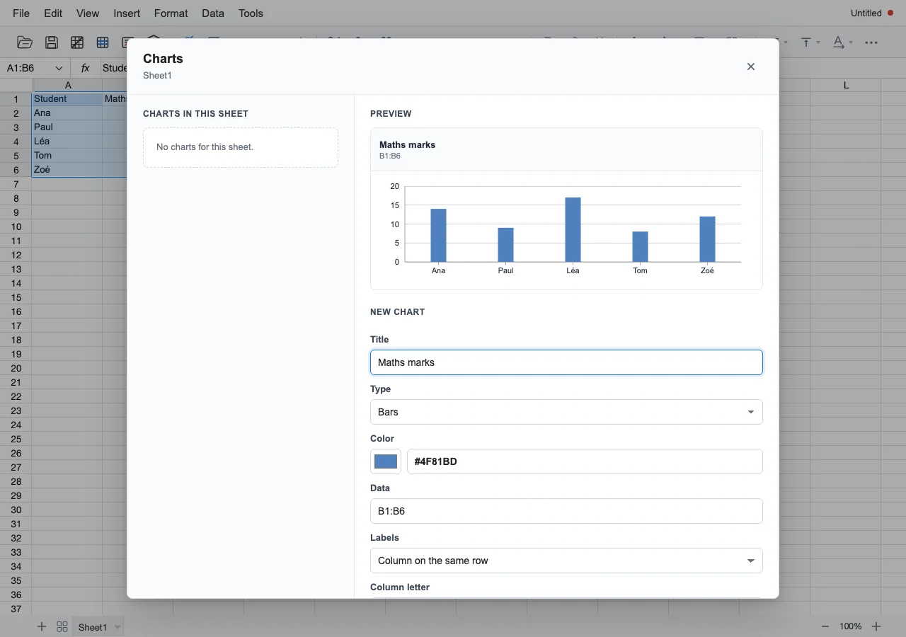
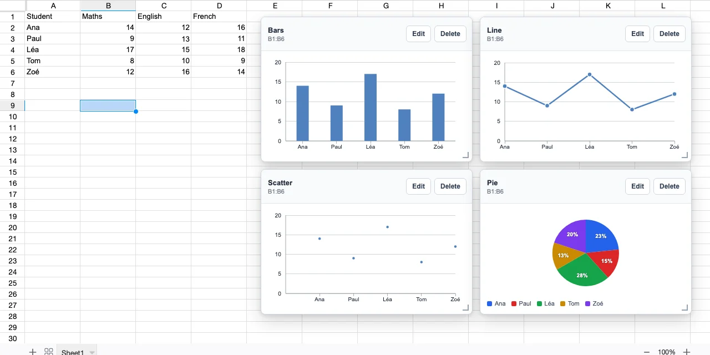
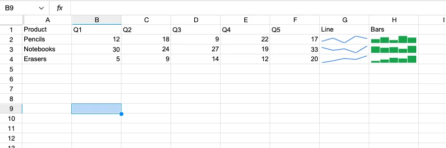

Charts and sparklines
Creating a chart
- Select the data.
- or Insert › Insert chart.
- Choose the type and the options; the preview follows.
- Add, then Close.

| Selection | Understood as |
|---|---|
| a column or a row of numbers | the data |
| two columns | labels in the first, data in the second |
| two rows | labels in the first, data in the second |
| two separate columns, chosen with Ctrl | the same |
A chart shows one series: a row or a column of data. Cells without a number, such as a header, are ignored.
Types
| Type | For | Labels |
|---|---|---|
| Bars | comparing | under the bars |
| Line | an evolution | on the x-axis |
| Scatter | a relation between two quantities | they are the x-values, if they are numbers; otherwise 1, 2, 3… |
| Pie | shares; positive values | in the legend or on the slices |
Up to 120 values, 24 for a pie.

Options
| Field | Content |
|---|---|
| Title | required; shown at the top of the chart |
| Color | picker or code #4F81BD; slices have their own colors |
| Data | the range: B2:B6 |
| Labels | None; Column on the same row (A); Row across the same columns (1); Custom range, of the same size as the data |
| Display | values, legend, x-axis, y-axis, grid |
Moving, editing
- Dragging the title strip moves the chart; dragging its bottom right corner resizes it.
- Edit reopens the window, Delete deletes it. The window also lists all the charts of the sheet.
- The chart follows the data of its cells.
Charts are saved in the Excel file as real charts, and read back by DocCells. They are not printed with the sheet.
Sparklines
The SPARKLINE function draws a miniature chart in the cell.
=SPARKLINE(B2:F2)
=SPARKLINE(B2:F2, {"charttype"\"column"})
=SPARKLINE(B2:F2, {"charttype"\"line", "color"\"#dc2626", "linewidth"\2})
=SPARKLINE(B2:F2, {"charttype"\"bar", "max"\100})
Options are written between braces: the name, a backslash, the value; the separator of arguments between two options.
charttype | Drawing | Own options |
|---|---|---|
"line" (default) | line | color, linewidth, xmin, xmax, ymin, ymax |
"bar" | stacked bars | max, color1, color2 |
"column" | columns | color, negcolor, lowcolor, highcolor, firstcolor, lastcolor, axis, axiscolor, ymin, ymax |
"winloss" | wins and losses | the same, without ymin and ymax |
Common options: empty ("zero" or "ignore"), nan ("convert" or "ignore"), rtl (right to left). The SPARKLINE documentation gives all the values, with examples.
For a larger drawing, enlarge the row and the column, or merge cells.